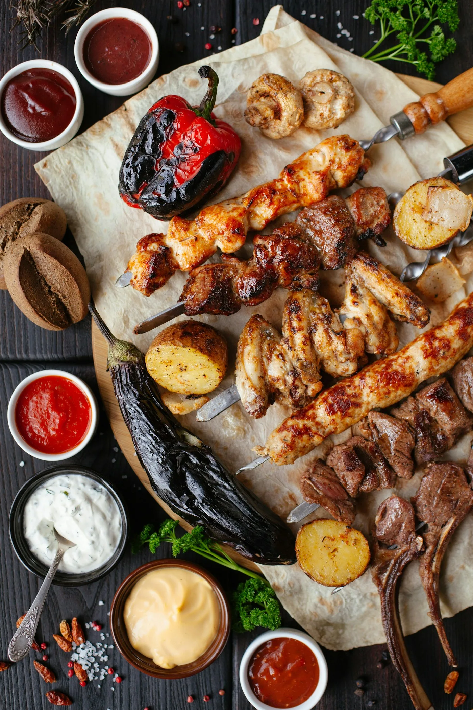
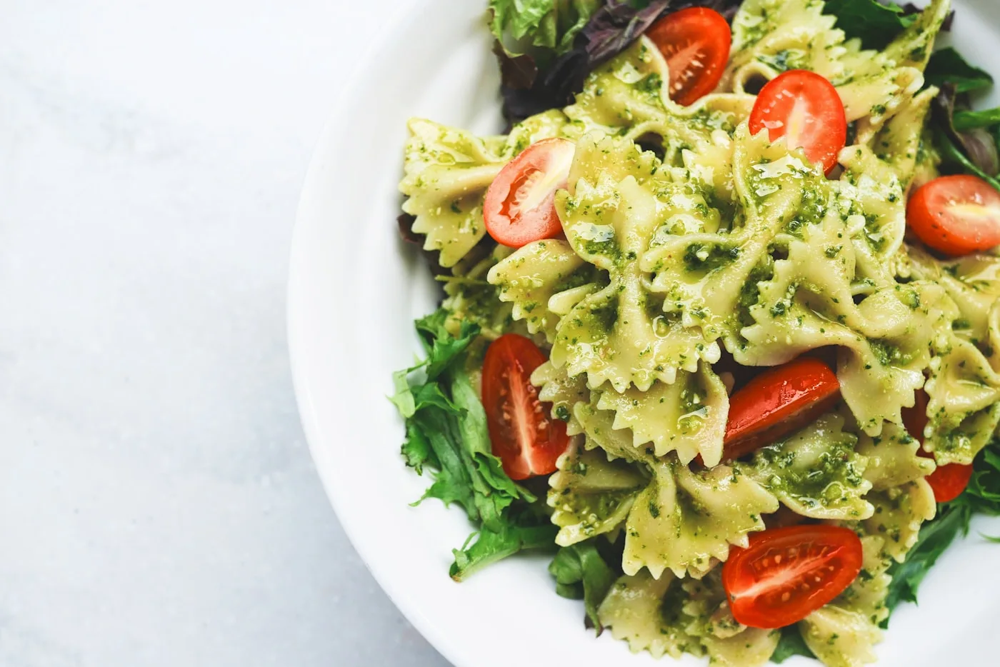

SUDESTE · MINAS GERAIS
Pão de queijo
O clássico lanche mineiro: crocante por fora, elástico por dentro, feito com polvilho azedo e queijo minas curado.
◷ 40 min · FÁCIL
Dos sabores do Brasil aos clássicos do mundo.
Receitas,
histórias e um pouco de inspiração
para transformar o seu próximo prato.

INSPIRAÇÃO PARA COMPARTILHARO clássico lanche mineiro: crocante por fora, elástico por dentro, feito com polvilho azedo e queijo minas curado.
O clássico prato de domingo do Rio de Janeiro: feijão preto cozido lentamente com carnes salgadas e defumadas, servido com arroz, couve refogada, farofa e laranja.
O clássico romano: massa, ovos, guanciale e pecorino — sem creme de leite, com a cremosidade vindo só do ovo e da água da massa.
Frango marinado em iogurte e especiarias, grelhado e finalizado num molho cremoso de tomate e manteiga.
De onde a gente vem.
E de tudo o que ainda vai descobrir.

O MUNDO TAMBÉM SENTA À NOSSA MESA.Da carbonara italiana ao ramen japonês, descubra pratos que atravessam fronteiras e encontram um lugar na sua cozinha.
Conheça os sabores do mundo ↗